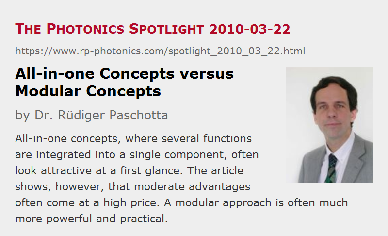

All-in-one Concepts versus Modular Concepts
Posted on 2010-03-22 as a part of the Photonics Spotlight (available as e-mail newsletter!)
Permanent link: https://www.rp-photonics.com/spotlight_2010_03_22.html
Author: Dr. Rüdiger Paschotta, RP Photonics Consulting GmbH
Abstract: All-in-one concepts, where several functions are integrated into a single component, often look attractive at a first glance. The article shows, however, that moderate advantages often come at a high price. A modular approach is often much more powerful and practical.
Ref.: encyclopedia articles on semiconductor saturable absorber mirrors (SESAMs), dispersion compensation, ultrafast lasers, high-power lasers, master oscillator power amplifier, mode-locked fiber lasers; The Photonics Spotlight 2008-06-20

Particularly in bulk lasers, we often use different parts for including different functions: a laser crystal for providing the laser gain, a SESAM for passive mode locking, a prism pair for dispersion compensation, etc. Sometimes, it is possible to combine two or even more functions in a single part, thus reducing the overall number of parts. Developments in this direction are often considered a great thing, but this all-in-one approach deserves some critical thought. Here, I do this for several example cases and also draw some general conclusions.
SESAMs with Built-in Dispersion Compensation
In many mode-locked lasers, we need some saturable absorber (most often a SESAM) for passive mode locking and also something for dispersion compensation. This triggered the idea to do both with a single device – a SESAM with built-in dispersion compensation. The idea looked great, and it was pretty obvious how to realize it. Such SESAMs have a kind of dielectric mirror structure (consisting of semiconductor layers), and it is well known that chromatic dispersion can be engineered into such structures with various methods. One can, e.g., realize a simple Gires–Tournois interferometer structure, or alternatively a chirped mirror. I myself have once been involved in a project using the latter approach, see Paschotta et al., Appl. Phys. Lett. 75 (15), 2166 (1999), doi:10.1063/1.124953. However, this concept never really took off, and I can tell you why:
- There are some technical problems and limitations, which can partly be overcome but can at least be nasty in some situations. Only a limited amount of dispersion can be engineered into a SESAM, and even more so the achievable operation bandwidth is limited. Furthermore, dispersive features are often associated with resonances (e.g., in GTI designs) which also effect other parameters such as the modulation depth and saturation fluence. The laser may then decide to lase in some wavelength region where it avoids the highest losses, but this may not be where you get the desired dispersion. You may then need an additional intracavity bandpass filter, which brings the component count back to where it was and may have additional unwanted side effects.
- An ordinary SESAM already has a number of important parameters such as the modulation depth, the saturation fluence and the recovery time, apart from the operation wavelength and bandwidth. When chromatic dispersion is added as another dimension, such a device gets even more specialized: if you want to try out different parameter values, you need to have many more different devices, which is highly inconvenient. At most for mass fabrication of a product, where you really need one particularly combination of parameters, that concept could be worthwhile to use, but in research or for manufacturing in not very large numbers it is not practical.
All-in-one Ultrafast Laser Sources
As I have already discussed this example case in the The Photonics Spotlight 2008-06-20, I mention it only briefly here. It is possible in principle to use a kind of all-in-one ultrafast laser source instead of an regenerative amplifier system, consisting of a mode-locked laser, a pulse picker and the actual amplifier. It turns out, however, that the performance of such all-in-one devices is severely limited; you never get the pulse energies which you easily reach with regenerative amplifiers. Furthermore, the design of such devices is much more sophisticated, so that the development cost can be expected to be much higher than for the traditional regenerative amplifier approach. So it is not surprising to me that on the laser market you can hardly find anything like that.
High-power Lasers vs. MOPAs
One often uses a master oscillator power amplifier (MOPA) instead of a conceptually more simple high-power laser. This approach obviously increases the number of parts, but it is nevertheless often very worthwhile. For example, it is easier that way to combine high-power operation with various other features such as short pulse durations or a narrow emission bandwidth. Also, it is easier for a manufacturer to realize product versions with different power levels just by combining the same laser with different combinations of amplifier stages.
Fibers with Multiple Functionalities in Mode-locked Fiber Lasers
In mode-locked fiber lasers, a single optical fiber often has quite a few different functionalities, such as providing the gain, chromatic dispersion and possibly also contributing to some artificial saturable absorption via nonlinear polarization rotation. In other cases, one also exploits some nonlinearity, the effect of optical bandpass filtering related to the limited gain bandwidth or some other effects. This may look very elegant, but also introduces a lot of limitations. The device complexity is reduced in some sense, but the operation details actually increase in complexity due to the many constraints. I believe that quite a few people would be very happy to have all these functions separated, but this is often impossible. For example, you cannot simply remove the fiber nonlinearity and introduce the wanted amount of nonlinearity separately.
Some General Conclusions
The examples have shown that while the complexity of a device may be somewhat reduced by integrating several functions into one part, this often comes at a high price. Part of this is the increased complexity of the operation details, and also we get additional constraints which can strongly limit the achievable performance.
In practice, one often finds that a modular approach is much more powerful and practical: it gives more performance with a much smaller development effort, and more easily allows one to make devices with somewhat modified performance characteristics.
If anyone should invest into all-in-one devices, it will normally be a manufacturer of mass products. Only for him, the advantages of this approach can be relevant, while the increased development cost may not be so important. However, there are few real mass products in the laser market, particularly in the area of ultrafast lasers.
And how about researchers – aren't these expected to explore new concepts? In principle, they are, but I think that anyone will be well advised to think carefully about the potential and foreseeable limitations of new concepts. Part of my recipe for success as a researcher was not to do certain things (even if my boss wanted me to do it!) when I could predict that it would not be worthwhile. And just to have no better idea is of course not a good reason for implementing a bad one. The right trick is often the following: think again!
This article is a posting of the Photonics Spotlight, authored by Dr. Rüdiger Paschotta. You may link to this page and cite it, because its location is permanent. See also the RP Photonics Encyclopedia.
Note that you can also receive the articles in the form of a newsletter or with an RSS feed.
Questions and Comments from Users
Here you can submit questions and comments. As far as they get accepted by the author, they will appear above this paragraph together with the author’s answer. The author will decide on acceptance based on certain criteria. Essentially, the issue must be of sufficiently broad interest.
Please do not enter personal data here; we would otherwise delete it soon. (See also our privacy declaration.) If you wish to receive personal feedback or consultancy from the author, please contact him e.g. via e-mail.
By submitting the information, you give your consent to the potential publication of your inputs on our website according to our rules. (If you later retract your consent, we will delete those inputs.) As your inputs are first reviewed by the author, they may be published with some delay.
|  |
If you like this page, please share the link with your friends and colleagues, e.g. via social media:
These sharing buttons are implemented in a privacy-friendly way!